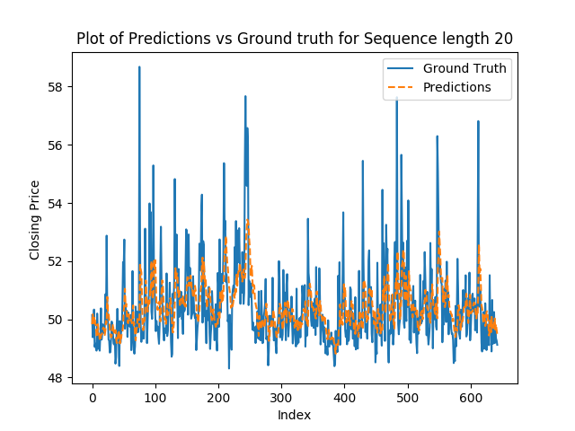
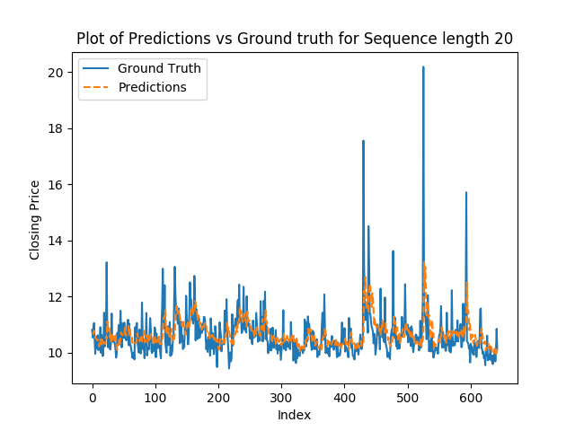
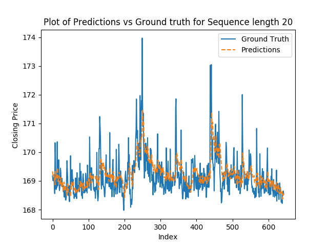
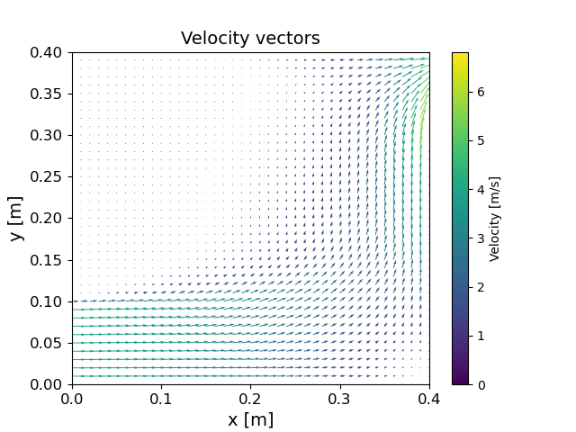
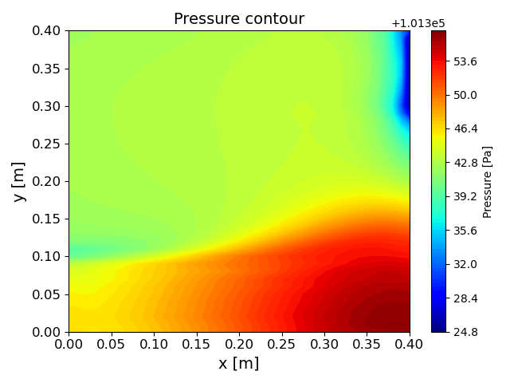
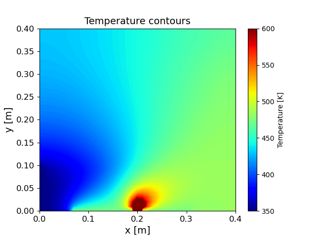
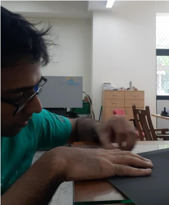
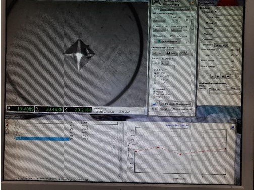
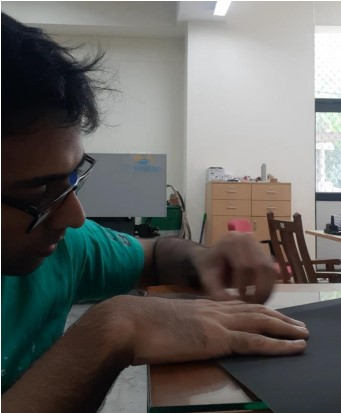
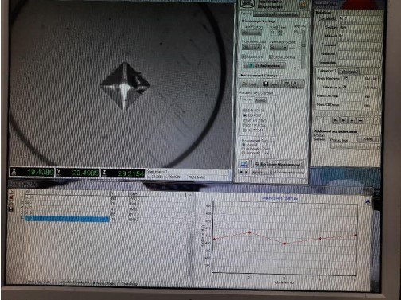

As part of my master's research at Carnegie Mellon University, I am working under Professor Rebecca Taylor to study the mechanics and movements of micro-robotic structures.
Developing novel methods to solve Fluid-Structure Interactions of micro-scale flexible structures on LS-Dyna
Optimizing the drag factors of different micro-swimmers to improve efficiency and speed of locomotion
Modelled electromagnetic forces acting on the swimmer. An oscillating magnettic field drives movement of the swimmer
Reinforcement Learning for time-series forecasting
As part of '11-785 Intro to Deep Learning' in CMU, My team and I created RLFinNet, a reinforcement learning-based model tailored to forecast financial time-series data.
Achieved an accuracy of2.1% better than state-of-the-art with a training time of only 110 seconds on an Nvidia Tesla T4
I rewrote the existing OneNet model to be more lightweight and streamline the input dimensions, weighing the adjusted close price as the most important.



A drawback of this project is that none of us on the team have expertise in financial modelling. We chose this topic because the mathematics of forecasting data as unpredictable as financial data seemed very interesting.
Here is a link to the project report
Here is a link to the Github
Modelling inert gas flow in an Additive Manufacturing Chamber
As part of '24-718 Computational Fluid Dynamics' in CMU, My team and I wrote a Python script to solve Navier Stokes and model inert gas flow in an Additive Manufacturing chamber
I wrote the python script to solve the complete conservative Navier-Stokes Equation and sweep a combination of input and output locations
We were sensitive to three factors - Heat Transfer around the build plate, carrying spatter particles away from the build, and flushing the entire chamber with the inert gas



One big drawback of the formulation used in this project is the lack of eddy currents formed, which might be a result of the changes to the dynamic viscosity. We were forced to make the gas very viscous to allow us to complete all the required simulations in time to complete the course.
Here is a link to the project report
Here is a link to the Github
Annealing Additive Manufactured Stainless Steel with Microwaves
For my undergraduate Thesis I worked under Dr Gururaj Telasang at The International Advanced Research Centre for Powder Metallurgy and New Materials. I worked on the effects of annealing Additively Manufactured Stainless steel with microwaves. After noticing this lacuna in the literature at the time, I investigated the effects of microwaves on the microstructure of Stainless steel.
I operated the SLM HL280 machine for Laser Powder bed fusion. I was also in charge of disassembling parts of the machine, cleaning them, and reassembling the whole machine.
I prepared, mounted and polished samples to perform metallography. I analyzed the vicker's hardness, Archimedes density, microstructure, and porosity.
Using microwaves, I was able to reduce the energy expenditure when compared to standard annealing by upto 40%
 


